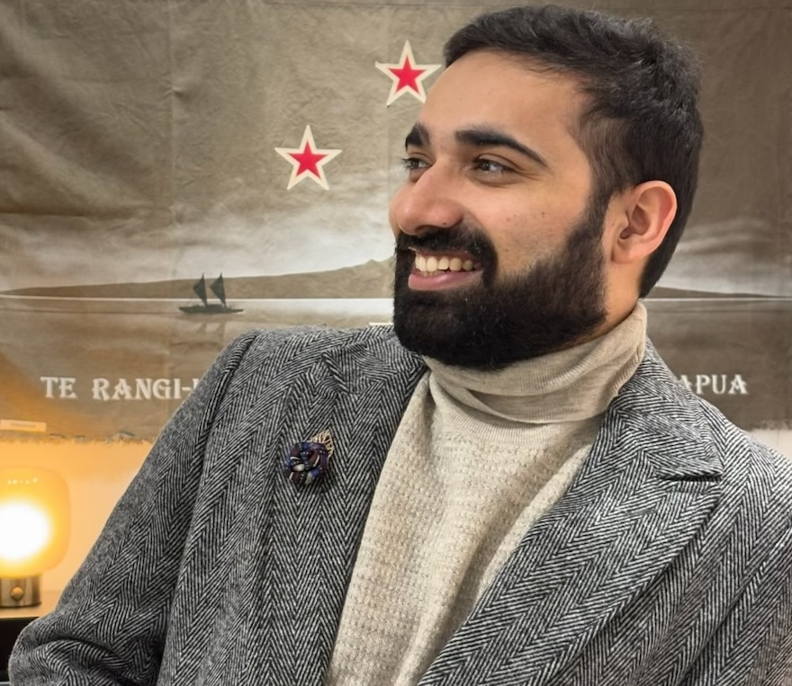

Raaz RSK Dwivedi
|
 |
Assistant Professor, Cornell Tech, Cornell University Co-founder, Traversal |
Ph. D. students
Kyuseong Choi (5th year Stats, co-advised with Kengo Kato)
Brian Cho (4th year ORIE, co-advised with Nathan Kallus)
Albert Gong (3rd year CS, co-advised with Kilian Q. Weinberger)
Dominik Meier (2nd year CS, co-advised with Kyra Gan)
News
Jun 2025: Presentation at Causal inference workshop, ACM Sigmetrics!
Nov 2024: Honored to receive one of the Blackwell Rosenbluth Awards for contributions to Bayesian statistics, 2024!
Recent preprints and publications:
Jun 2025: N^2: A unified python package and test bench for nearest neighbor-based matrix completion, joint work with Caleb Chin, Aashish Khubchandani, Harshvardhan Maskara, Kyuseong Choi, Jacob Feitelberg, Albert Gong, Manit Paul, Tathagata Sadhukhan, and Anish Agarwal, up on arxiv!
Apr 2025: Low rank thinning, joint work with Annabelle Michael Carrell, Albert Gong, Abhishek Shetty, and, Lester Mackey accepted at ICML 2025!
Feb 2025: Cheap permutation testing, joint work with Carles Domingo-Enrich and Lester Mackey, up on arxiv!
Feb 2025: Instability, computational efficiency and statistical accuracy, joint work with Nhat Ho, Koulik Khamaru, Martin J. Wainwright, Michael I. Jordan, and Bin Yu, published in JMLR!
Dec 2024: On adaptivity and minimax optimality of two-sided nearest neighbors, joint work with Tathagata Sadhukhan and Manit Paul, up on arxiv!
Oct 2024: Distributional matrix completion via nearest neighbors in the Wasserstein space, joint work with Jacob Feitelberg, Kyuseong Choi, and Anish Agarwal, up on arxiv!
Oct 2024: Learning counterfactual distributions via kernel nearest neighbors, joint work with Kyuseong Choi, Jacob Feitelberg, and Anish Agarwal, up on arxiv!
Sep 2024: Supervised Kernel Thinning, accepted at NeurIPS 2024!
May 2024: Debiased Distribution Compression, joint work with Lingxiao Li and Lester Mackey accepted at ICML 2024!
Selected presentations
Integrating Double Robustness Into Causal Latent Factor Models || TALK Video || slides
2024: Columbia Stats, MIT ORC, Online Causal Inference Seminar, Cornell Weil (Tom Ten Have)
From HeartSteps To HeartBeats: Personalized Decison-making || TALK Video || animated slides | slides ||
2023: Cornell ORIE Industry Summit, AI CS, Stats & DS, CAM, Yale Stats & DS, Gatsby UCL, Stanford GSB OIT Group, UW Madison Stats, UIUC CS, Wharton Stats, UCLA Stats; 2022: Cornell ORIE, Cornell Tech ORIE, Rutgers Stats, Stanford EE (ISL), UC Berkeley EECS (BLISS)
Counterfactual Inference
In Sequential Experiments || preprint 1, preprint 2 | slides | poster ||
With Unobserved Confounding || preprint 3 | slides | poster ||
2023: ACM-FCRC, Informs APS, NESS, ACIC, MIT, IIM-A; 2022: NeurIPS, Cornell YRW, RSS, Informs, IMS, ACIC, SCM Princeton, Simons, MIT, Harvard
Distribution Compression
For Integration: Kernel Thinning And Compress || TALK Video || COLT (KT), ICLR 1 (GKT), ICLR 2 (Compress) | slides ||
For Hypothesis Testing: Compress Then Test || AISTATS (CTT) | slides | poster ||
2024: KAUST, 2023: JSM, MCM, AISTATS, MIT; 2022: RSS, SIAM, MSRI, JSM, ICLR, AABI, Harvard
Selected Other Topics/Talks
Non-asymptotic Guarantees For High-Dimensional Sampling || JMLR (MALA) | JMLR (HMC) | JMLR (Vaidya/John walks) | slides ||
Stable Discovery Of Interpretable Subgroups In Causal Studies || ISR | slides | poster ||
Revisiting Minimum Description Length Complexity In Overparameterized Models || preprint | slides | poster | video ||
Brief Bio
2021-2023: FODSI Postdoctoral Fellow, Harvard & MIT, co-advised by Prof. Susan Murphy & Prof. Devavrat Shah
2015-2021: Ph.D., EECS, UC Berkeley, co-advised by Prof. Martin Wainwright & Prof. Bin Yu (thesis)
2010-2014: B. Tech., EE, IIT Bombay, advised by Prof. Vivek Borkar (thesis)
Contact: Bloomberg 452, Roosevelt Island, New York City, dwivedi@cornell.edu, Google Scholar
Fun Stat
Website visitor counts by country since Apr 3, 2022: